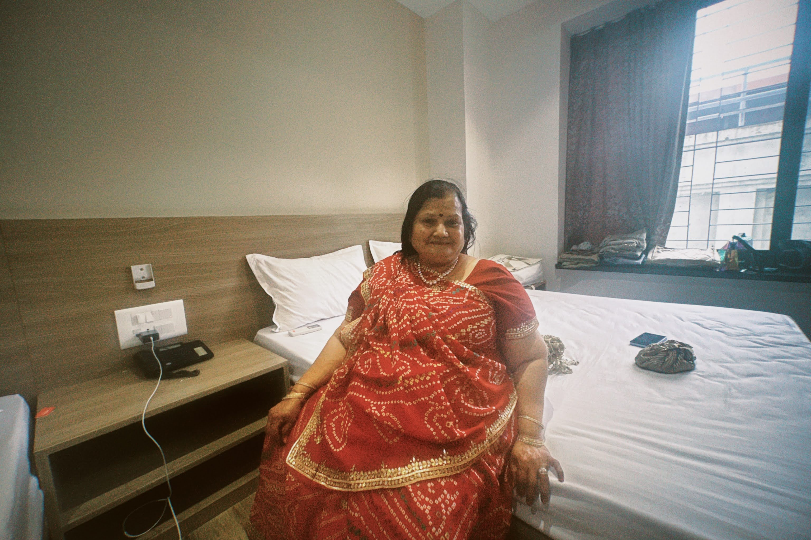

Simple ritual
The kind of video she would send without context, assuming the remedy speaks for itself.
About
When I was little, Nani would sit me on the floor and work coconut oil through my hair. I rolled my eyes, she never skipped a strand.

She'd part my hair, warm oil in her hands, and talk about school while I tried not to squirm. It smelled like coconuts and patience.
Her hair is still perfect. Mine is busy with serums and seven-step routines. She keeps asking, "but why?" and I'm running out of good answers.
Now she forwards Facebook remedy videos late at night. I used to swipe them away. Lately I watch them and wonder if she's been right all along.
"Your skin doesn't need more. It just needs you to stop confusing it."
Nani's world
Three YouTube clips that feel close to her kind of skincare advice: simple, familiar, and never overdone.
The kind of video she would send without context, assuming the remedy speaks for itself.
Very much her style: a few familiar ingredients, mixed quickly, no dramatic claims.
The sort of thing that makes me hear her voice saying not to overcomplicate what already works.